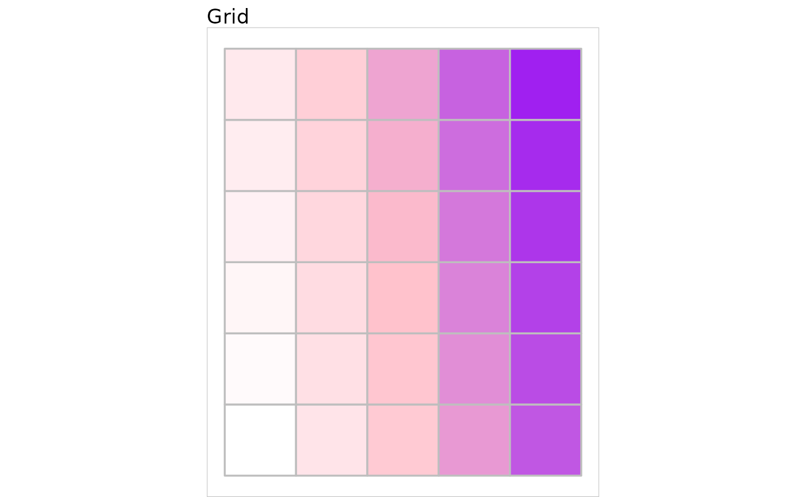
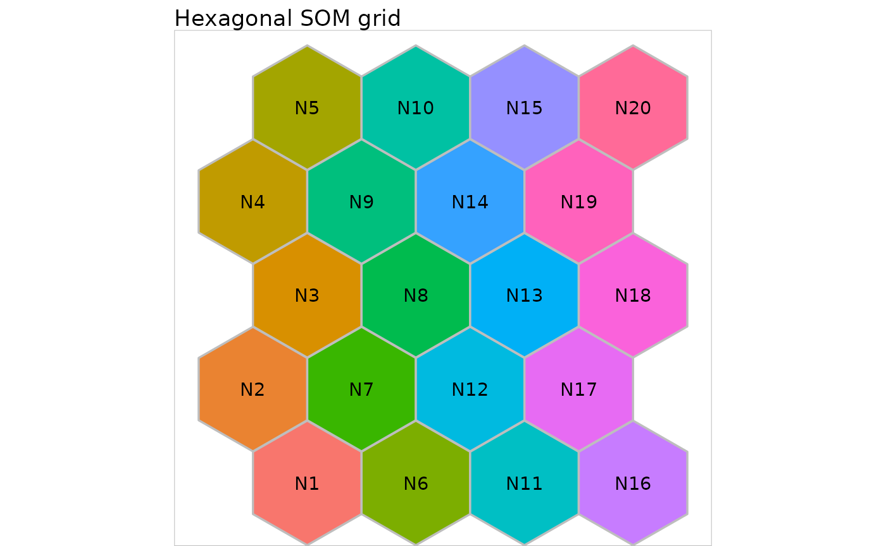

A basic vignette on grids in SOMbrero
10 août, 2020
Source:vignettes/b-doc-grids.Rmd
b-doc-grids.Rmd
Definition and purpose of a myGrid class object
Objects of class myGrid are made to display the SOM grid.
Basic functions on a myGrid class object
In this section, we will consider only the four basic functions that can be applied on a myGrid class object:
initGrid,print.myGridsummary.myGridplot.myGrid
The initGrid function
The initGrid function initializes a new myGrid object. It has 3 arguments:
dimension, which is a vector of two integers. The first one is the x dimension (number of neurons/units on the x axis) and the second one is the y dimension. The default dimensions are x=5 and y=5,topo, which is the chosen topology. The value of this argument must be one ofsquareorhexagonal. The__default value__ is square.dist.type, which is the distance type to compute the distance between two neurons of the grid. The default value is euclidean and the coordinates of the neurons on the grid are chosen so as the minimum Euclidean distance between two neurons is exactly 1.hexagonaltopoology is only compatible with the Euclidean distance.
The following R code initializes a new myGrid object of square topology, x dimension 5 and y dimension 6, and distance type maximum.
first_grid <- initGrid(dimension = c(5,6), topo = "square", dist.type = "maximum")
The print.myGrid function
The myGrid object print function prints the main features of the chosen object in the console. The only argument is the object to be printed.
Considering the previously initialized grid, the print command is:
print(first_grid)
##
## Self-Organizing Map structure
##
## Features :
## topology : square
## x dimension : 5
## y dimension : 6
## distance type: maximum
The summary.myGrid function
The myGrid object summary function is quite simple. It only prints the class of the object and then calls the print function previously described. The only argument is the object to be summarized.
summary(first_grid)
##
## Summary
##
## Class : myGrid
##
## Self-Organizing Map structure
##
## Features :
## topology : square
## x dimension : 5
## y dimension : 6
## distance type: maximum
The plot.myGrid function
The myGrid object plot function draws the squared area corresponding to the object, in a new graphical window. It has 3 parameters:
the object to be plotted,
show.names, boolean, indicating if the names of the neurons should be displayed on the graph (default toTRUE)names, a vector, giving the names of the neurons ifshow.names = TRUE, default to the number of the neuron.
plot(first_grid)

plot(first_grid) + ggplot2::scale_fill_manual(values = rep("white", 30))

my_palette <- colorRampPalette(c("white", "pink", "purple"))(30) plot(first_grid, show.names = FALSE) + ggplot2::scale_fill_manual(values = my_palette)

Hexagonal grids can be displayed similarly:
second_grid <- initGrid(dimension = c(4, 5), topo = "hexagonal") plot(second_grid, names = paste0("N", 1:20)) + ggplot2::ggtitle("Hexagonal SOM grid")

Session information
This vignette has been computed with the following environment:
## R version 4.0.2 (2020-06-22)
## Platform: x86_64-pc-linux-gnu (64-bit)
## Running under: Ubuntu 20.04.1 LTS
##
## Matrix products: default
## BLAS: /usr/lib/x86_64-linux-gnu/blas/libblas.so.3.9.0
## LAPACK: /usr/lib/x86_64-linux-gnu/lapack/liblapack.so.3.9.0
##
## locale:
## [1] LC_CTYPE=en_US.UTF-8 LC_NUMERIC=C
## [3] LC_TIME=fr_FR.UTF-8 LC_COLLATE=en_US.UTF-8
## [5] LC_MONETARY=fr_FR.UTF-8 LC_MESSAGES=en_US.UTF-8
## [7] LC_PAPER=fr_FR.UTF-8 LC_NAME=C
## [9] LC_ADDRESS=C LC_TELEPHONE=C
## [11] LC_MEASUREMENT=fr_FR.UTF-8 LC_IDENTIFICATION=C
##
## attached base packages:
## [1] stats graphics grDevices utils datasets methods base
##
## other attached packages:
## [1] SOMbrero_1.3-1 igraph_1.2.5
##
## loaded via a namespace (and not attached):
## [1] Rcpp_1.0.5 compiler_4.0.2 pillar_1.4.6
## [4] tools_4.0.2 digest_0.6.25 lattice_0.20-41
## [7] lubridate_1.7.9 checkmate_2.0.0 evaluate_0.14
## [10] memoise_1.1.0 lifecycle_0.2.0 tibble_3.0.3
## [13] gtable_0.3.0 png_0.1-7 pkgconfig_2.0.3
## [16] rlang_0.4.7 rstudioapi_0.11 yaml_2.2.1
## [19] hexbin_1.28.1 pkgdown_1.5.1 xfun_0.16
## [22] interp_1.0-33 metR_0.7.0 stringr_1.4.0
## [25] knitr_1.29 generics_0.0.2 desc_1.2.0
## [28] fs_1.5.0 vctrs_0.3.2 scatterplot3d_0.3-41
## [31] rprojroot_1.3-2 grid_4.0.2 data.table_1.13.0
## [34] glue_1.4.1 R6_2.4.1 rmarkdown_2.3
## [37] farver_2.0.3 deldir_0.1-28 ggplot2_3.3.2
## [40] magrittr_1.5 backports_1.1.8 scales_1.1.1
## [43] htmltools_0.5.0 ellipsis_0.3.1 MASS_7.3-51.6
## [46] ggwordcloud_0.5.0 assertthat_0.2.1 colorspace_1.4-1
## [49] labeling_0.3 stringi_1.4.6 munsell_0.5.0
## [52] crayon_1.3.4